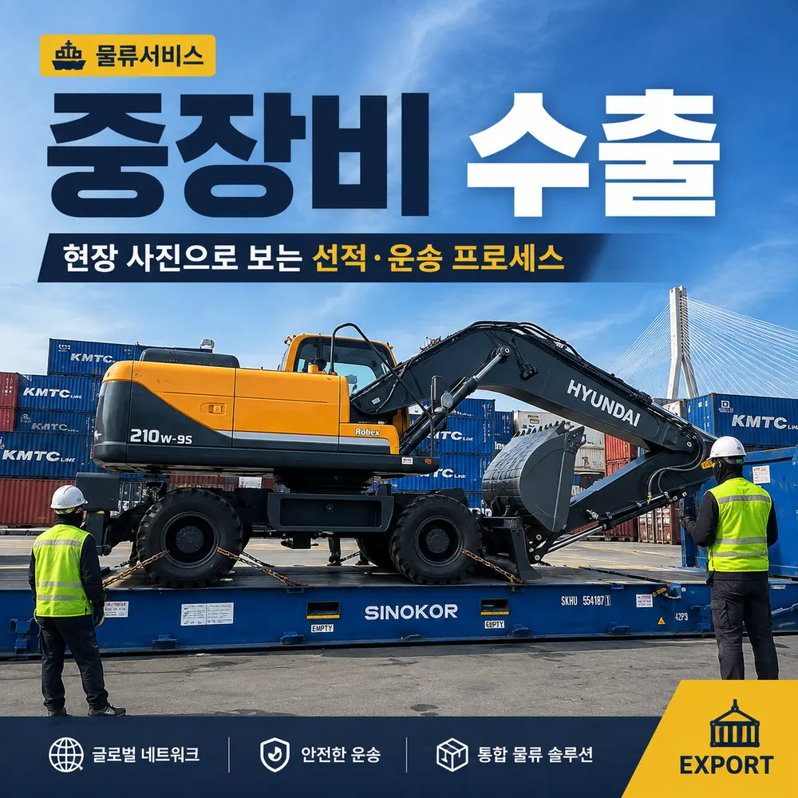
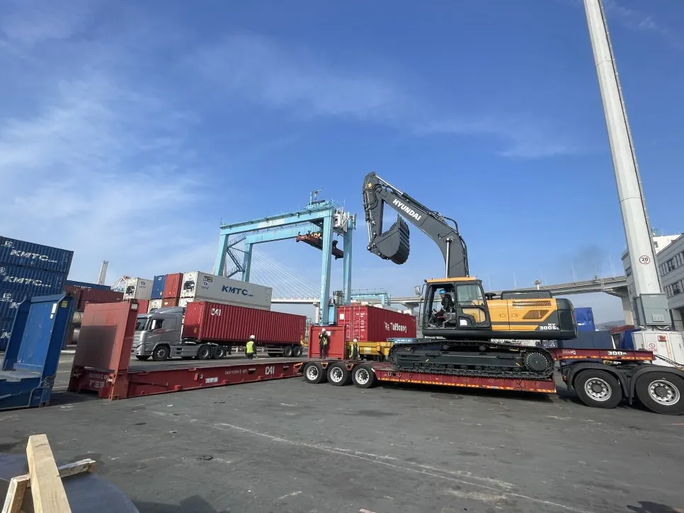
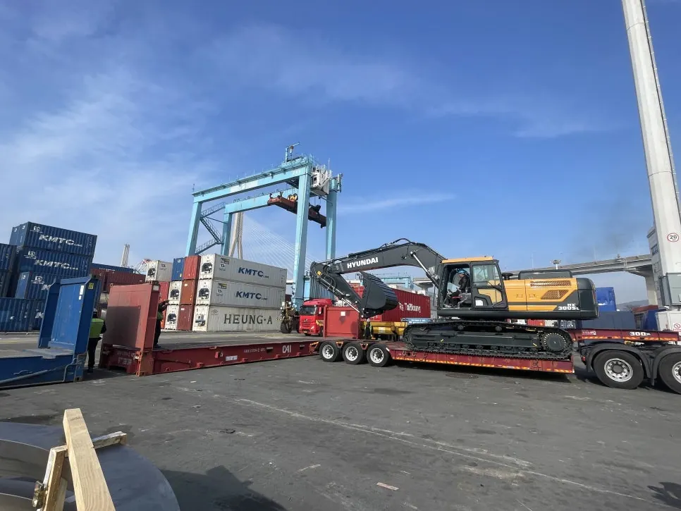
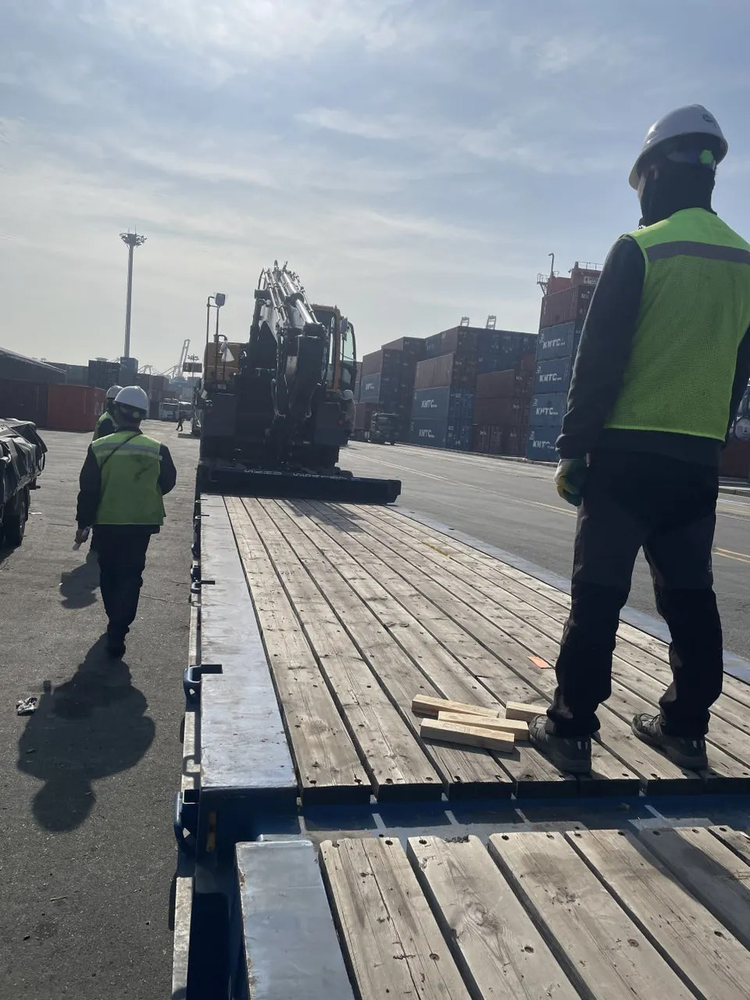
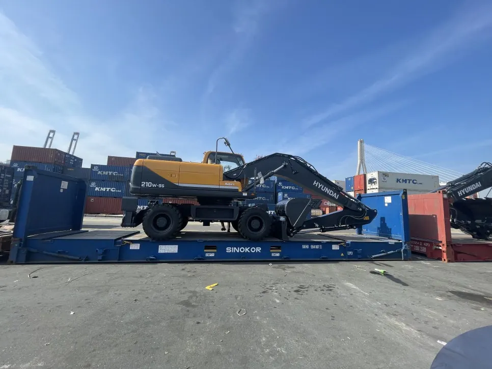
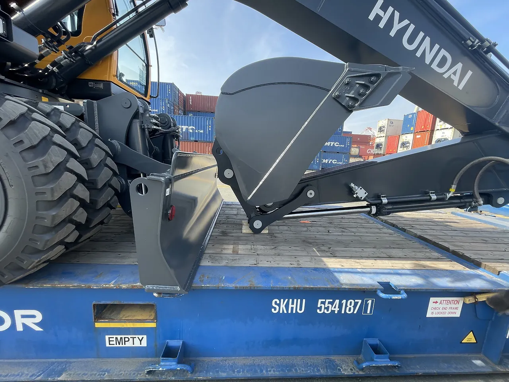

굴착기·중장비 수출,
Flat Rack 선적은 이렇게 진행됩니다
일반 컨테이너에 들어가지 않는 굴착기와 건설기계는 실제 선적 상태의 제원, 중량, 장비 가동 여부, 항로와 선사 조건을 먼저 확인해야 합니다. 현장 사진을 통해 중장비 수출 물류가 어떤 순서로 진행되는지 실무 중심으로 정리했습니다.

먼저 결론부터
중장비 수출은 ‘배에 싣는 일’보다 선적 전 제원 확인과 운송 방식 선정이 더 중요합니다. 길이·폭·높이와 중량을 실제 선적 상태로 확인하고, Flat Rack·Ro-Ro·Breakbulk 중 적합한 방식을 결정한 뒤 내륙운송, 터미널 반입, 적재·고박, 수출통관과 해상운송을 하나의 일정으로 연결해야 불필요한 재작업과 추가 비용을 줄일 수 있습니다.
1. 중장비 수출은 왜 일반 컨테이너 화물과 다를까요?
굴착기·휠로더·크레인 같은 중장비는 규격 초과(OOG) 가능성이 높고, 장비 자체의 중량과 무게 중심까지 함께 검토해야 하기 때문입니다.
일반 화물은 박스나 팔레트 규격을 기준으로 컨테이너에 적입하지만, 중장비는 붐·암·버킷·타이어·트랙 등 돌출부가 많고 선적 자세에 따라 최종 외형 치수가 달라집니다. 같은 모델이라도 어태치먼트 구성이나 작업 자세에 따라 Flat Rack에서 차지하는 공간과 OOG 범위가 달라질 수 있습니다.
따라서 견적 단계에서 카탈로그 수치만 보는 것이 아니라 실제 선적 상태의 L×W×H, 총중량, 자력 주행 가능 여부, 장비 사진을 함께 확인하는 것이 좋습니다. 이후 선사·터미널 반입 기준과 항로별 서비스 가능 여부를 맞춰 운송 방식을 결정합니다.
2. 현장 사진으로 보는 Flat Rack 중장비 선적
Flat Rack 작업의 핵심은 ‘올려놓는 것’이 아니라 컨테이너와 장비의 간섭·중심·돌출 범위를 현장에서 다시 확인하는 것입니다.





장비가 Flat Rack 위에 올라간 뒤에는 실제 돌출 폭과 높이, 장비 위치, 작업 중 접촉 위험을 다시 확인해야 합니다. 최종 고박 방식과 허용 범위는 장비 특성, 선사 및 터미널 작업 기준에 맞춰 결정합니다.
3. Flat Rack, Ro-Ro, Breakbulk 중 어떤 방식이 맞을까요?
정답은 장비 크기만으로 정하지 않습니다. 자력 주행 여부, 항로 서비스, 적재 가능 장비, 목적지 하역 환경과 총비용을 함께 비교해야 합니다.
| 운송 방식 | 주로 검토하는 경우 | 실무 포인트 |
|---|---|---|
| Flat Rack | 일반 Dry Container 규격을 초과하지만 컨테이너 기반 선적이 가능한 장비 | OOG 치수, 컨테이너 허용하중, 장비 위치와 고박 조건을 사전 확인 |
| Ro-Ro | 자력 주행이 가능하고 해당 항로에 Ro-Ro 서비스가 있는 차량·장비 | 운행 가능 상태, 연료·배터리 등 선사 반입 조건과 출도착항 서비스 확인 |
| Breakbulk | 초대형·초중량 장비 또는 컨테이너 장비로 처리하기 어려운 프로젝트 화물 | 선박·크레인·리프팅 포인트·현지 하역까지 별도 작업 설계가 필요 |
4. 중장비 수출은 이런 순서로 진행합니다
견적부터 선적까지 한 담당 흐름으로 연결하면 제원 오류, 특수차량 배차 누락, 터미널 작업 일정 충돌 같은 리스크를 줄일 수 있습니다.
특히 중장비는 내륙운송 차량과 선적 장비가 일반 컨테이너 화물과 다를 수 있어, 선사 부킹과 국내 운송 일정을 따로 잡기보다 픽업 → 터미널 반입 → 작업 → 선적을 하나의 타임라인으로 관리하는 것이 효율적입니다.
5. 견적 요청 전에 이것만 준비해도 진행이 빨라집니다
6. 케이브릿지는 중장비 수출을 한 번에 연결합니다
중장비 물류는 선사 운임만 비교해서 끝나는 업무가 아닙니다. 장비 제원 검토, 내륙운송 차량, 특수 컨테이너, 터미널 작업, 수출통관과 해상운송 일정이 서로 연결되어야 실제 선적이 원활하게 진행됩니다.
KBRIDGE 중장비 수출 지원 범위
- 굴착기·휠 굴착기·건설기계 제원 및 운송 방식 검토
- Flat Rack / Ro-Ro / Breakbulk 항로 및 선복 비교
- 국내 픽업·특수차량 배차와 터미널 반입 일정 관리
- 수출통관 서류 흐름 및 B/L 발행 연계
- 현장 적재·고박 작업 일정 확인과 선적 진행 관리
- 목적지 현지 파트너 연계를 통한 도착 후 후속 물류 검토
7. 중장비 수출 자주 묻는 질문
Q. 중장비는 반드시 Flat Rack 컨테이너로 수출해야 하나요?
아닙니다. 장비 외형 치수와 중량, 자력 주행 여부, 목적지 항만과 선사 서비스에 따라 Flat Rack, Ro-Ro, Breakbulk 등 적합한 방식을 비교해 결정합니다.
Q. 굴착기 수출 견적을 받을 때 어떤 정보가 필요한가요?
모델명, 실제 선적 상태의 길이·폭·높이, 중량, 자력 주행 가능 여부, 픽업지와 목적지, 장비 전후좌우 사진을 준비하면 운송 방식과 비용 검토가 빨라집니다.
Q. 붐이나 버킷이 컨테이너 규격을 넘으면 선적이 불가능한가요?
일반 컨테이너 규격을 초과하더라도 OOG 화물로 Flat Rack 등 특수 장비를 검토할 수 있습니다. 다만 최종 허용 치수와 적재 방법은 선사·터미널의 승인 조건을 확인해야 합니다.
Q. 중고 중장비 수출 시 추가로 확인할 사항이 있나요?
목적국에 따라 중고 장비의 검사, 세척, 환경·배출가스 기준, 현지 수입허가 또는 추가 서류 요구가 달라질 수 있습니다. 선적 전에 목적국 수입 기준과 현지 통관 조건을 확인하는 것이 안전합니다.
중장비 수출, 장비 사진과 제원만 보내주세요
모델명, L×W×H, 중량, 픽업지와 목적지를 알려주시면 Flat Rack·Ro-Ro·Breakbulk 중 가능한 방식을 검토해 견적 방향을 안내합니다.